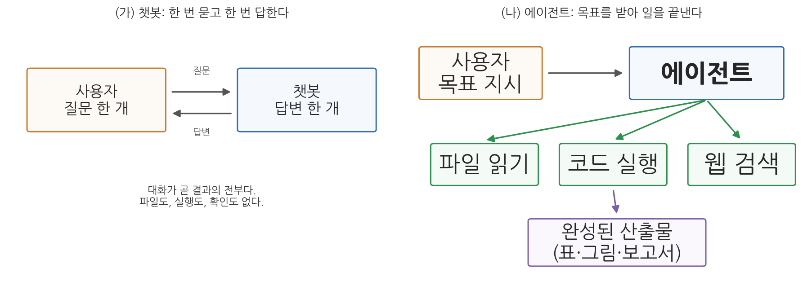
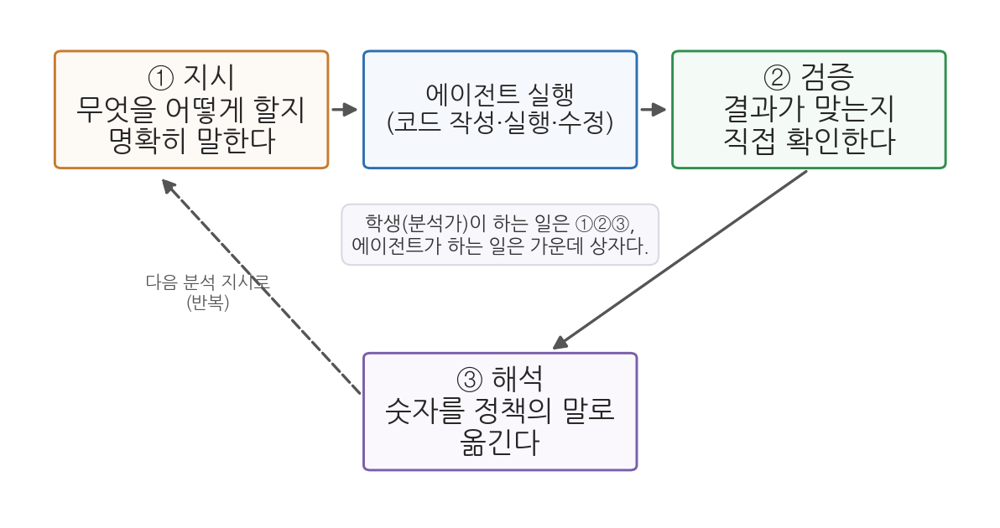
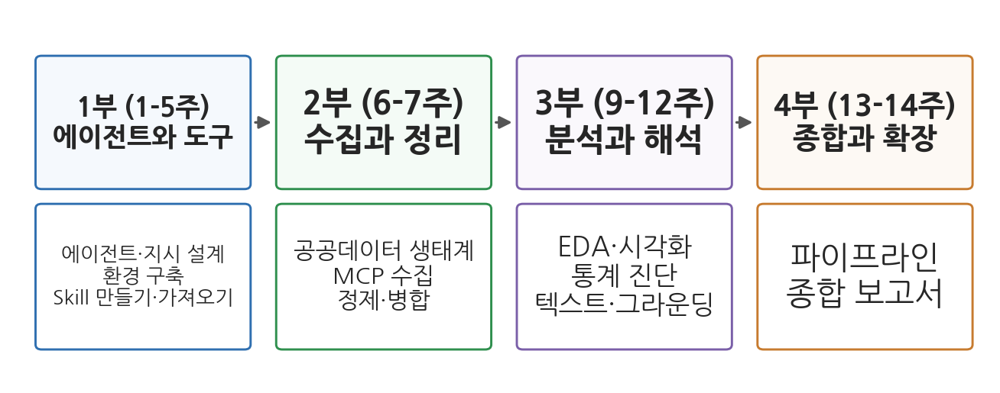

1주차 1회차. AI 에이전트 시대의 공공데이터 분석
측정할 수 있는 모든 것이 중요한 것은 아니며, 중요한 모든 것을 측정할 수 있는 것도 아니다. (윌리엄 브루스 캐머런, 『비공식 사회학』)
이 장에서 배우는 것
여러분이 구청 인턴으로 첫 출근을 했다고 상상해 보자. 과장이 이렇게 말한다. "우리 구의 어린이집이 부족하다는 민원이 자꾸 들어오는데, 정말 부족한 건지, 부족하다면 어느 동이 심한 건지 다음 주까지 정리해 줄래요?" 책상 위에는 노트북 한 대가 있을 뿐이다. 어디서부터 시작해야 할까.
10년 전이라면 이 일은 엑셀과 씨름하는 며칠을 뜻했다. 5년 전이라면 파이썬이라는 프로그래밍 언어를 다루는 "코딩 잘하는 동기"를 부러워했을 것이다. 지금은 다르다. 여러분의 노트북 안에는 파일을 읽고, 코드를 쓰고, 그 코드를 실행하고, 그림까지 그려 주는 AI 에이전트가 들어올 수 있다. 여러분이 할 일은 코드를 외우는 것이 아니라, 이 유능하지만 가끔 엉뚱한 조수에게 일을 정확히 시키고, 그 결과를 믿어도 되는지 따져 보는 것이다.
이 장은 그 출발점이다. 구체적으로 다음을 배운다.
- 공공부문에서 데이터 분석이 왜 필요한지 (증거기반 정책)
- 챗봇과 AI 에이전트가 어떻게 다른지
- 에이전트 시대에 분석가가 맡는 세 가지 역할, 곧 지시·검증·해석
- AI를 잘 쓰는 능력의 네 기둥, 곧 위임·기술·분별·성실
- 이 교재 전체가 어떻게 구성되어 있는지
이 장은 하나의 질문을 따라 전개된다. "코딩을 배운 적 없는 사람이 어떻게 데이터 분석을 할 수 있게 되었으며, 그때 사람에게 남는 일은 무엇인가?"
1.1 공공부문이 데이터를 분석하는 이유를 본다 (증거기반 정책) → 1.2 챗봇과 에이전트의 차이를 이해한다 → 1.3 사람에게 남는 세 가지 일을 배운다 (지시·검증·해석) → 1.4 AI를 잘 쓰는 능력을 네 기둥으로 정리한다 → 1.5 한 학기 로드맵을 확인한다.
1.1 공공부문은 왜 데이터를 분석하는가
감(感)으로 하는 행정의 한계
어느 시청 회의실에서 이런 대화가 오간다고 하자.
- 국장: "요즘 청년들이 우리 시를 많이 떠나는 것 같아. 청년 지원 예산을 늘립시다."
- 과장: "제 체감으로는 떠나는 건 청년보다 40대 가족인 것 같은데요. 학교 문제로요."
- 국장: "내 주변엔 다 청년이 떠난다던데."
두 사람 다 진심이지만, 근거는 둘 다 "내 주변"이다. 내 주변은 전체가 아니다. 국장의 주변에는 청년이 많고 과장의 주변에는 학부모가 많다면, 같은 도시를 보고도 정반대 진단이 나온다. 이렇게 개인의 경험과 인상에 기대어 정책을 정하면, 목소리 큰 사람의 경험이 곧 정책이 되어 버린다.
대안은 전체를 직접 세어 보는 것이다. 우리 시에서 작년에 나간 사람이 몇 명인지, 그중 20대가 몇 명이고 40대가 몇 명인지는 실제로 기록되어 있다. 주민등록 전출입 신고가 모두 데이터로 쌓이기 때문이다. 이 기록을 열어 보면 논쟁은 짧아진다. 숫자가 20대 순유출이 가장 크다고 말하면 청년 정책에 힘이 실리고, 40대가 크다면 교육 정책이 우선이 된다.
이처럼 정책을 인상이 아니라 데이터와 증거에 기대어 설계하고 평가하자는 흐름을 증거기반 정책(evidence-based policy)이라 부른다. 한국 정부도 이 방향으로 움직여 왔다. 각종 통계를 한곳에 모은 KOSIS 국가통계포털, 행정기관이 보유한 데이터를 개방하는 공공데이터포털 같은 창구가 만들어졌고, 법(공공데이터의 제공 및 이용 활성화에 관한 법률)으로 공공데이터 개방이 의무화되었다. 자세한 내용은 5주차에서 다룬다.
공공데이터(public data)는 정부·지자체·공공기관이 업무 과정에서 만들거나 수집해 국민에게 개방한 데이터다. 인구, 예산, 민원, 버스 노선, 미세먼지 측정값이 모두 여기에 든다.
증거기반 정책(evidence-based policy)은 직관이나 관행 대신 데이터와 분석 결과를 근거로 정책을 설계·집행·평가하려는 접근이다.
데이터는 쌓여 있는데 분석할 사람이 없다
그런데 현실에는 역설이 하나 있다. 데이터는 넘치는데, 그것을 분석할 수 있는 사람은 늘 모자란다. 공공데이터포털에는 수만 건의 데이터셋이 올라와 있고, KOSIS에는 국가승인통계가 분야별로 쌓여 있다. 그러나 시군구 주민센터의 담당자가, 혹은 행정학과를 졸업하고 막 입직한 주무관이 그 데이터를 내려받아 분석하는 일은 드물었다. 이유는 단순하다. 분석에는 도구가 필요했고, 그 도구(엑셀 고급 기능, 파이썬, R 같은 프로그래밍 언어)를 익히는 데 몇 학기가 걸렸기 때문이다.
그래서 오랫동안 "데이터 분석"은 분업으로 처리되었다. 정책을 아는 사람이 질문을 만들고, 코딩을 아는 사람이 분석을 하고, 두 사람 사이에서 질문이 왜곡되곤 했다. 정책 담당자는 "그건 그런 뜻으로 물은 게 아닌데"라고 답답해하고, 분석자는 "그러면 처음부터 정확히 말씀하시지"라고 답답해했다.
이 교재가 다루는 변화는 바로 이 지점에서 일어났다. 코딩이라는 관문이 갑자기 낮아진 것이다.
1.2 챗봇에서 에이전트로: 무엇이 달라졌나
챗봇: 묻고 답하는 도구
2022년 말 ChatGPT가 나오면서 많은 사람이 처음으로 AI와 "대화"를 해 보았다. 이런 도구를 챗봇(chatbot)이라 부른다. 챗봇은 질문을 받으면 답을 글로 돌려준다. 보고서 초안을 잡아 주고, 어려운 개념을 풀어 설명해 주고, 영어 문장을 다듬어 준다.
그런데 챗봇에게 어린이집 분석을 시켜 보면 곧 한계에 부딪힌다.
- "우리 구 동별 어린이집 현황을 분석해 줘"라고 하면, 챗봇은 우리 구의 실제 데이터를 갖고 있지 않다. 그럴듯한 일반론을 답할 뿐이다.
- 데이터 파일을 직접 붙여 넣어 주면 일부 도움을 받을 수 있지만, 수백 줄짜리 표를 채팅창에 붙여 넣는 것부터가 고역이다.
- 챗봇이 "이런 파이썬 코드를 쓰면 됩니다"라고 코드를 줘도, 그 코드를 어디서 어떻게 실행하는지는 여전히 내 몫이다. 실행하다 오류가 나면 오류문을 복사해 다시 붙여 넣고, 고친 코드를 받아 다시 실행하는 "복사-붙여넣기 왕복"이 시작된다.
요컨대 챗봇은 말로 돕는 조언자이지, 일을 대신 해 주는 일꾼이 아니다.
에이전트: 목표를 받아 일을 끝내는 도구
AI 에이전트(AI agent)는 여기서 한 걸음 나아간다. 에이전트는 대답만 하는 것이 아니라 행동한다. 여러분의 컴퓨터 안에서 파일을 열어 읽고, 코드를 쓰고, 그 코드를 직접 실행하고, 오류가 나면 스스로 고쳐서 다시 실행하고, 최종 결과(표, 그림, 보고서 파일)를 폴더에 저장한다.

그림 1-1을 보자. 왼쪽(가)의 챗봇은 질문과 답변을 주고받는 것이 전부다. 오른쪽(나)의 에이전트는 사용자에게서 목표를 받은 뒤, 파일 읽기·코드 실행·웹 검색 같은 도구(tool)를 스스로 골라 쓰면서 완성된 산출물을 만들어 낸다. 대화가 결과가 아니라, 폴더에 저장된 파일이 결과다.
구체적인 장면으로 비교해 보자. 어린이집 과제를 각각에게 맡기면 이렇게 된다.
챗봇에게 시킬 때. "동별 어린이집 데이터를 분석하는 파이썬 코드를 짜 줘" → 코드를 받는다 → 내가 파이썬을 설치한다 → 내가 코드를 실행한다 → 오류 발생 → 오류문을 복사해 챗봇에 붙여 넣는다 → 고친 코드를 받는다 → 다시 실행한다 → (반복) → 그림이 나오면 내가 보고서에 붙인다.
에이전트에게 시킬 때. "이 폴더의 어린이집 현황 파일을 읽고, 동별 어린이집 수와 아동 인구를 비교해서, 아동 1,000명당 어린이집 수가 적은 동 순서로 표와 그래프를 만들어 줘" → 에이전트가 파일을 열어 구조를 파악하고, 코드를 짜서 실행하고, 오류가 나면 스스로 고치고, 완성된 표와 그래프 파일을 폴더에 저장한 뒤 "동별 편차가 큽니다. A동과 B동이 가장 부족합니다"라고 요약해 준다.
두 장면의 차이가 이 과목 전체를 관통한다. 챗봇 시대에 사람은 AI와 컴퓨터 사이의 전달자(복사-붙여넣기 담당)였다. 에이전트 시대에 사람은 일을 시키고 결과를 판단하는 관리자가 된다.
AI 에이전트(AI agent)는 사용자가 준 목표를 이루기 위해, 스스로 계획을 세우고 도구(파일 읽기·쓰기, 코드 실행, 웹 검색 등)를 사용해 여러 단계의 작업을 수행하는 AI 시스템이다. 한 번의 질문에 한 번 답하는 챗봇과 달리, 에이전트는 목표가 달성될 때까지 "계획 → 행동 → 결과 확인"을 반복한다. 이 반복의 자세한 구조는 2주차에서 배운다.
이 과목의 표준 도구: VSCode와 Claude Code
에이전트에도 여러 제품이 있다. 이 과목은 그중 Claude Code를 표준 도구로 쓴다. Claude Code는 Anthropic이 만든 에이전트로, 프로그래머들이 쓰는 무료 편집기인 VSCode(Visual Studio Code) 안에 확장 프로그램으로 설치해 쓸 수 있다. 화면 왼쪽에는 내 폴더와 파일이 보이고, 오른쪽의 대화창에서 에이전트에게 한국어로 일을 시키면, 에이전트가 그 폴더 안에서 실제로 작업한다. 설치와 첫 사용은 바로 다음 회차(1주차 2회차)에서 손으로 해 본다.
한 가지 미리 말해 둘 것이 있다. "프로그래머의 편집기"라는 말에 겁먹을 필요가 없다. 우리는 VSCode를 코드를 짜는 곳이 아니라, 에이전트에게 일을 시키고 그 작업 현장을 지켜보는 사무실로 쓴다. 여러분이 이 과목에서 코드를 한 줄씩 작성하는 일은 없다. 다만 에이전트가 짠 코드가 무슨 일을 하는지 알아보는 눈은 조금씩 기르게 된다.
에이전트는 유능하지만 완벽과는 거리가 멀다. 없는 통계를 그럴듯하게 지어내기도 하고(환각, 2주차), 지시를 미묘하게 오해하기도 하며, 잘못된 데이터를 자신 있게 분석하기도 한다. 이 과목에서 "에이전트가 한 일은 반드시 검증한다"는 원칙을 매주 반복하는 이유다. 에이전트를 믿고 일을 맡기되, 확인 없이 믿지는 않는다.
1.3 분석가의 새 역할: 지시, 검증, 해석
코드를 에이전트가 짠다면 사람은 무엇을 하는가. 놀고 있으면 되는가. 그렇지 않다. 일의 종류가 바뀔 뿐, 오히려 더 판단이 필요한 일이 사람에게 남는다. 이 과목은 그것을 세 단어로 요약한다. 지시, 검증, 해석이다.

그림 1-2가 이 순환을 보여 준다. 학생(분석가)은 ① 에이전트에게 일을 지시하고, 에이전트가 실행(코드 작성·실행·수정)을 마치면 ② 그 결과를 검증하고, 검증을 통과한 결과를 ③ 정책의 언어로 해석한다. 해석에서 새 질문이 생기면 다시 ①로 돌아간다.
지시: 무엇을 원하는지 정확히 말하기
에이전트는 여러분의 마음을 읽지 못한다. "어린이집 데이터 분석해 줘"라고만 하면, 에이전트는 무엇을 기준으로("부족"의 정의는?), 어느 범위에서(구 전체? 동별?), 어떤 형태로(표? 그림? 보고서?) 답해야 할지 스스로 짐작해야 하고, 그 짐작은 여러분의 의도와 다를 수 있다.
AI 연구자 안드레 카파시(Andrej Karpathy)는 이 변화를 두고 "가장 뜨거운 새 프로그래밍 언어는 영어"라고 말했다. 우리에게는 한국어다. 원하는 것을 명확한 자연어로 조직하는 능력이, 프로그래밍 문법을 외우는 능력을 대체한 것이다. 좋은 지시를 만드는 구체적 기술(역할·맥락·과제·제약·산출물의 다섯 요소)은 3주차에서 본격적으로 훈련한다.
검증: 결과를 믿어도 되는지 따지기
세 역할 중 가장 중요하고, 가장 소홀히 하기 쉬운 것이 검증이다. 에이전트의 산출물은 언제나 자신만만해 보인다. 표는 깔끔하고 그래프는 그럴듯하고 요약문은 유창하다. 그러나 유창함은 정확함의 증거가 아니다.
예를 들어 에이전트가 "A동의 아동 1,000명당 어린이집 수는 2.1개로 구 평균(4.3개)의 절반 이하입니다"라고 보고했다고 하자. 검증하는 분석가는 이렇게 따진다. 원본 데이터에서 A동의 어린이집 수와 아동 수를 직접 찾아 나누어 보면 정말 2.1이 나오는가. 어린이집 수에 폐원한 시설이 섞여 있지는 않은가. "아동"의 나이 범위를 나와 에이전트가 같게 잡았는가(0-5세인가 0-7세인가). 하나라도 어긋나면 결론이 달라질 수 있다.
검증은 에이전트를 의심해서 하는 소모적인 일이 아니라, 분석 결과에 내 이름을 걸기 위한 최소한의 절차다. 공공부문에서는 특히 그렇다. 잘못된 숫자가 보도자료에 실리면 정정보도로 끝나지 않고 정책 불신으로 이어진다.
해석: 숫자를 정책의 말로 옮기기
마지막으로, 검증을 통과한 숫자도 스스로 말하지는 않는다. "A동의 1,000명당 어린이집 수 2.1개"라는 숫자가 정책적으로 무슨 뜻인지는 맥락을 아는 사람이 판단해야 한다. A동에 마침 대단지 아파트가 입주해 아동 수가 급증한 직후라면, 이 숫자는 "공급 부족"이 아니라 "시차"의 문제일 수 있다. A동 옆에 어린이집이 많은 B동이 붙어 있고 실제 통원이 이루어진다면 행정동 경계로 나눈 계산 자체가 실태를 왜곡할 수도 있다.
이런 판단은 데이터 바깥의 지식, 곧 제도와 현장에 대한 이해를 요구한다. 행정학을 공부하는 여러분이 이 과목에서 갖는 비교우위가 바로 여기에 있다. 코드는 에이전트가 짜지만, "이 숫자가 우리 구에서 무엇을 뜻하는가"는 행정을 아는 사람만이 답할 수 있다.
카파시는 AI 도구의 이상적인 모습을 자동차의 자율주행 단계에 비유했다. 완전 수동(사람이 다 함)과 완전 자율(AI가 다 함) 사이에서, 상황에 따라 자율성의 수준을 조절할 수 있어야 한다는 것이다. 데이터 분석도 같다. 단순 반복 작업(같은 형식의 월별 보고서)은 에이전트에게 크게 맡기고, 판단이 필요한 작업(정책 제언)은 사람이 고삐를 짧게 잡는다. 무엇을 얼마나 맡길지 정하는 감각 자체가 이 과목에서 기르는 핵심 역량이다.
1.4 AI 플루언시의 네 기둥: 위임, 기술, 분별, 성실
지시·검증·해석이 "분석 작업"의 순환이라면, 더 넓게 AI라는 도구 자체를 잘 다루는 능력을 가리키는 말도 있다. Anthropic이 대학 교육을 위해 정리한 AI 플루언시(AI fluency) 프레임워크는 이 능력을 네 기둥으로 나눈다. 외국어를 유창하게(fluent) 하듯 AI를 유창하게 다룬다는 뜻이다.
표 1-1. AI 플루언시의 네 기둥
| 기둥 | 뜻 | 어린이집 과제에서의 예 |
|---|---|---|
| 위임(delegation) | 어떤 일을 AI에게 맡기고 어떤 일을 내가 할지 정한다 | 데이터 정리와 그래프는 맡기고, "부족"의 기준 설정은 내가 정한다 |
| 기술(description) | 원하는 것을 명확하게 설명한다 | "아동 1,000명당 어린이집 수를 동별로 계산해 오름차순 표로" |
| 분별(discernment) | 결과의 품질과 정확성을 비판적으로 평가한다 | 계산 몇 개를 손으로 재검산하고, 이상하게 큰 값의 원인을 추적한다 |
| 성실(diligence) | 책임 있고 투명하게 사용한다 | 보고서에 AI 활용 사실과 검증 절차를 명시한다 |
네 기둥은 이 교재의 구조와 그대로 맞물린다. 위임과 기술은 3주차(지시 설계)에서, 분별은 매주 실습의 검증 절차에서, 성실은 13주차(책임 있는 AI 활용)에서 집중적으로 다룬다. 지금 기억할 것은 하나다. AI를 잘 쓴다는 것은 신기한 답을 받아내는 요령이 아니라, 맡기고·설명하고·따지고·책임지는 네 가지 습관의 묶음이라는 점이다.
1.5 이 교재의 로드맵과 학습법
한 학기의 지도

그림 1-3이 한 학기의 지도다. 교재는 4부, 13개 주로 구성되며 각 주는 이론(1회차)과 실습(2회차)으로 나뉜다.
- 1부 (1-4주) 에이전트와 도구. 에이전트가 무엇이고 어떻게 작동하는지 이해하고, 일 시키는 법(지시 설계)을 훈련하고, 내 노트북에 분석 환경을 갖춘다. 환경 구축조차 에이전트에게 지시해서 한다.
- 2부 (5-7주) 공공데이터의 수집과 정리. 한국 공공데이터가 어디에 어떤 형태로 있는지 익히고, 오픈API로 자동 수집하고, 지저분한 데이터를 분석 가능한 상태로 정제한다.
- 3부 (8-11주) 분석과 해석. 데이터를 그림으로 탐색하고(EDA), 통계로 차이의 의미를 따지고, 민원 같은 텍스트 데이터를 분석하고, 법령·문서에 근거해 답하는 에이전트를 만든다.
- 4부 (12-13주) 종합과 확장. 수집부터 보고까지 전 과정을 에이전트 파이프라인으로 묶고, 자기 주제로 분석 보고서를 완성한다.
5주차 실습에서 각자 학기 프로젝트의 주제와 데이터를 정하고, 이후 실습에서 그 데이터를 계속 다듬어 13주차의 최종 보고서로 완성한다. 매주의 실습이 서로 남남이 아니라 한 편의 분석으로 쌓이는 구조다.
이 교재로 공부하는 법
첫째, 실습 장의 지시문 예시를 그대로 입력하는 데서 시작하되, 반드시 한 번은 바꿔서 다시 시켜 본다. 지시를 바꾸면 결과가 어떻게 달라지는지 관찰하는 것이 에이전트 감각을 기르는 가장 빠른 길이다.
둘째, 에이전트가 실패하는 장면을 아까워하지 않는다. 오류, 오해, 환각은 이 과목에서 가장 좋은 교재다. 실습 장의 "자주 겪는 문제"는 실제로 자주 일어난다.
셋째, 검증 체크리스트를 건너뛰지 않는다. 결과가 그럴듯할수록 더 확인한다. 이 습관이 성적보다 오래 남는 이 과목의 진짜 산출물이다.
요약
공공부문은 인상이 아니라 증거에 기대어 정책을 만들려 하며(증거기반 정책), 그 재료인 공공데이터는 이미 방대하게 개방되어 있다. 오랫동안 데이터 분석은 코딩이라는 관문 때문에 소수의 일이었으나, 행동하는 AI인 에이전트의 등장으로 관문이 낮아졌다. 챗봇이 말로 돕는 조언자라면 에이전트는 파일을 읽고 코드를 실행해 일을 끝내는 일꾼이며, 이 과목은 VSCode 안의 Claude Code를 표준 도구로 쓴다. 코드를 에이전트가 짜는 시대에 분석가에게 남는 일은 지시(원하는 것을 정확히 말하기), 검증(결과를 믿어도 되는지 따지기), 해석(숫자를 정책의 말로 옮기기)이다. 이를 더 일반화한 것이 AI 플루언시의 네 기둥(위임·기술·분별·성실)이다. 교재는 4부 13주로, 도구 → 수집·정리 → 분석·해석 → 종합의 순서를 따른다.
연습문제
1-1. 맡길 일과 맡기지 않을 일. 다음 다섯 가지 업무를 "에이전트에게 크게 맡겨도 되는 일"과 "사람이 고삐를 짧게 잡아야 하는 일"로 나누고, 각각 이유를 한 문장씩 써 보라. (a) 작년 민원 데이터에서 월별 건수를 세어 표로 만들기 (b) 민원 감소를 위해 어느 부서의 예산을 줄일지 정하기 (c) 300쪽짜리 국정감사 자료집에서 우리 기관 언급 부분만 찾아 요약하기 (d) 주민 공청회에서 나온 반대 의견에 대한 기관의 공식 답변 작성하기 (e) 데이터 파일 50개의 이름을 규칙에 맞게 일괄 변경하기
1-2. 챗봇 vs 에이전트. 1.2절의 어린이집 사례를 참고하여, "우리 학교 도서관의 학과별 대출 데이터를 분석해 학과별 인기 도서 목록을 만드는 일"을 챗봇에게 시킬 때와 에이전트에게 시킬 때 각각 어떤 단계가 필요한지 순서대로 써 보라. 사람이 개입해야 하는 단계에 밑줄을 그어 보라.
1-3. 검증의 습관. 에이전트가 "우리 시의 합계출산율은 0.58로 전국 최저 수준입니다"라고 보고했다고 하자. 이 문장을 보고서에 옮겨 적기 전에 확인해야 할 것을 세 가지 이상 나열하라. (힌트: 숫자 자체, 비교 기준, 자료의 출처와 시점)